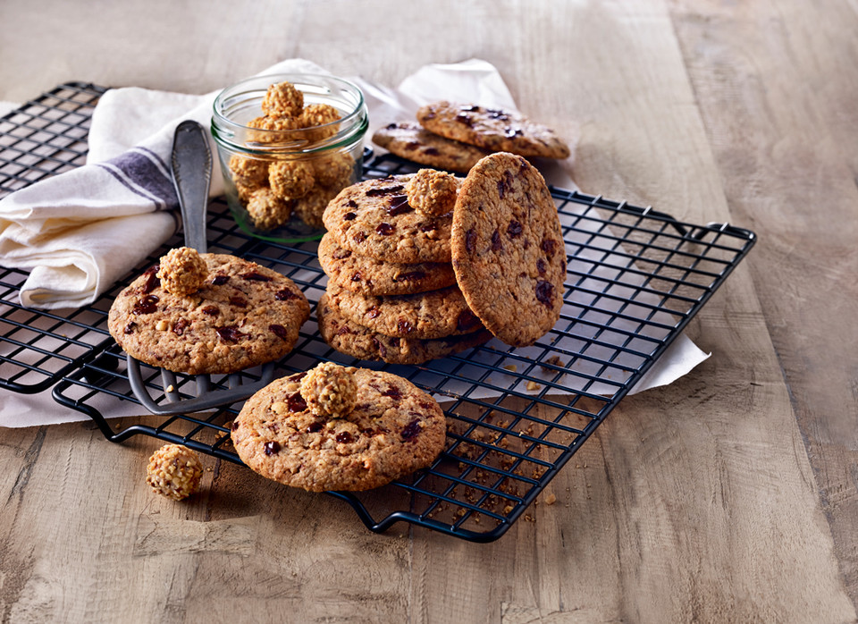

Herzlich Willkommen
Rezepte
Giotto Cookies
Dauer: ca. 30 Minuten

Zutaten
- 400 g Zartbitterschokolade
- 210 g Butter, weiche
- 200 g Puderzucker
- 5 Stange/n GiOTTO 9 Kugeln
- 1 Prise(n) Salz
- 2 Ei(er)
- 350 g Mehl
- 3 TL Backpulver
- 100 g Haselnüsse, fein gehackt